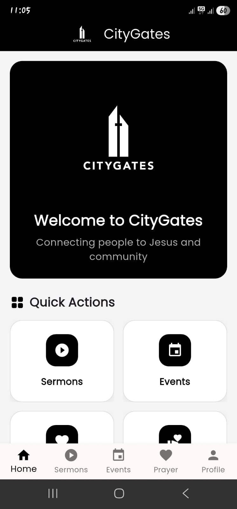
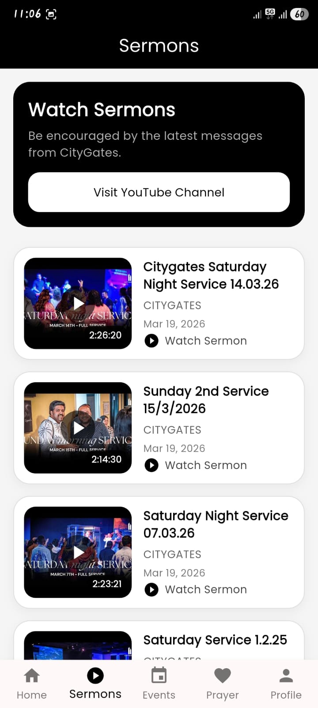
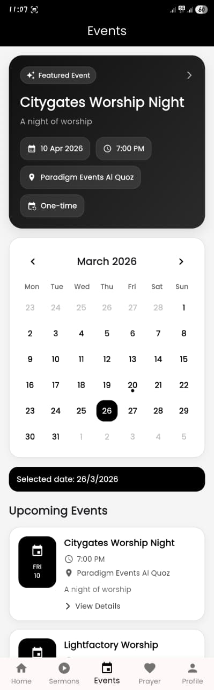
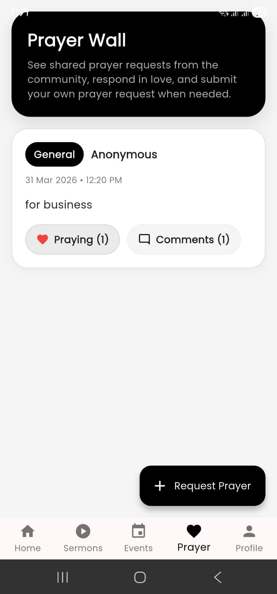
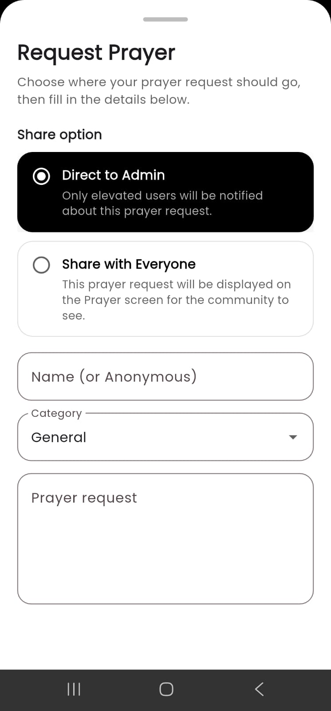
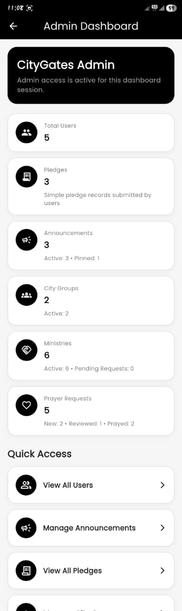
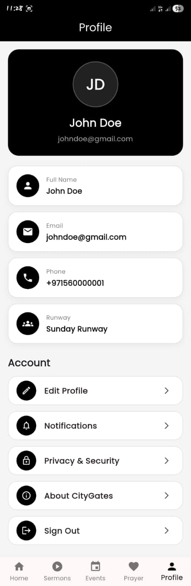
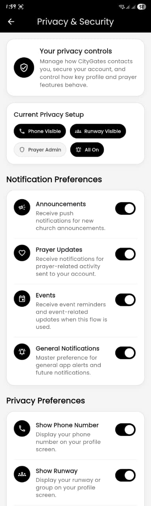

Project Showcase
Church App Platform
A Flutter and Firebase church ecosystem built with sermons, events, prayer requests, authentication, profile management, privacy controls, and admin-side content management.
Screens
Inside the app experience.
A closer look at the key user flows and admin features across the CityGates church app.

Home
Sermons
Events
Prayer Wall
Request Prayer
Admin Dashboard
Profile
Privacy & Security